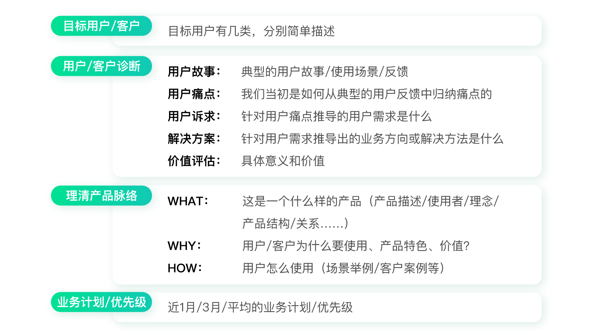
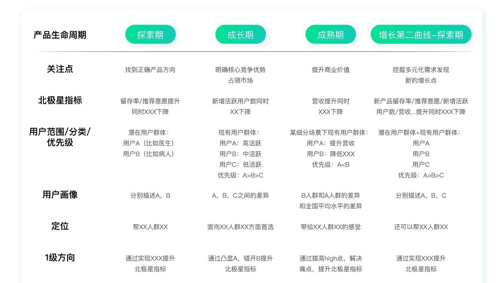
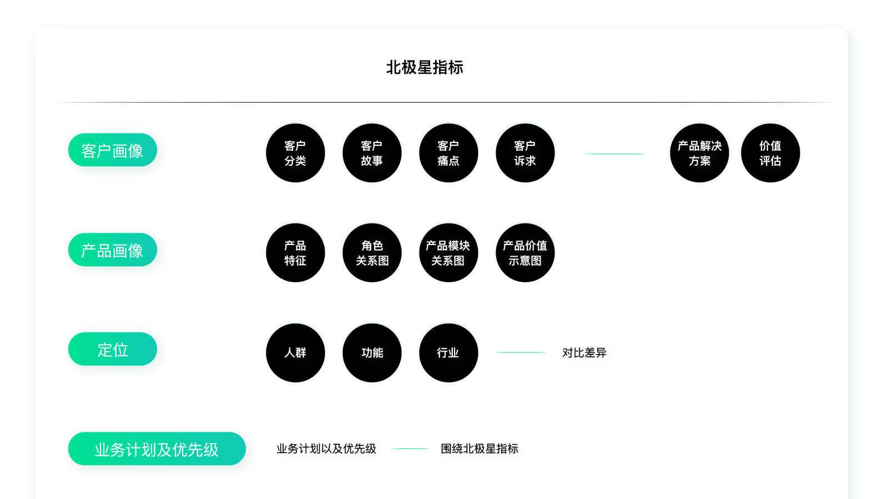
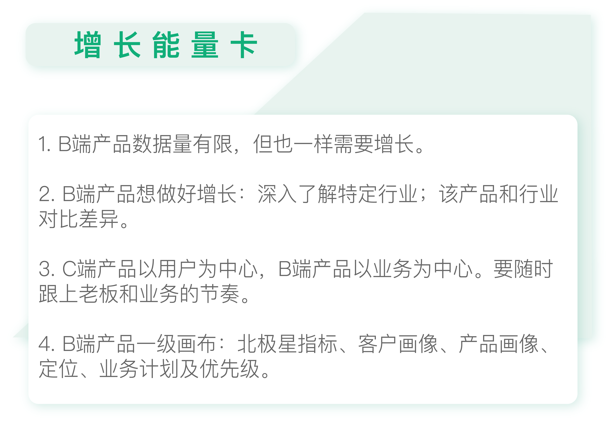

- 00 开篇词 人人都是增长官.md.html
- 01 预习 增长小白如何“弯道超车”？.md.html
- 02 预习 如何理解“增长”？.md.html
- 03 预习 不同职能如何做好增长？.md.html
- 04 预习 做增长如何处理职能间的矛盾？.md.html
- 05 正确目标找不对，天天加班也枉然.md.html
- 06 活学活用北极星指标.md.html
- 07 OKR如何助力增长？.md.html
- 08 不懂用户调研？那就对了！.md.html
- 09 调研目标：在差异性洞察中找到爆破点.md.html
- 10 数据分析：在“花式对比”中发现玄机.md.html
- 11 用户分类：围绕北极星指标细分人群.md.html
- 12 用户访谈：像侦探一样寻找破案线索（上）.md.html
- 13 用户访谈：像侦探一样寻找破案线索（下）.md.html
- 14 提炼用户差异，发现增长契机.md.html
- 15 挖掘产品优势，打破增长瓶颈.md.html
- 16 定位营销差异，抢占用户心智.md.html
- 17 一级方向：找到增长爆破点.md.html
- 18 B端产品如何调研？.md.html
- 19 全局规划增长机会.md.html
- 20 统筹全局的用户增长地图.md.html
- 21 案例解析：定义关键增长指标.md.html
- 22 正负双向洞察，找准切入点.md.html
- 23 二级机会：制定增长策略.md.html
- 24 为一家濒临破产的公司制定增长策略（上）.md.html
- 25 为一家濒临破产的公司制定增长策略（中）.md.html
- 26 为一家濒临破产的公司制定增长策略（下）.md.html
- 27 为什么指标数据怎么优化都不提升？.md.html
- 28 案例解析：打造增长闭环（上）.md.html
- 29 案例解析：打造增长闭环（下）.md.html
- 30 案例解析：唤醒沉睡用户（上）.md.html
- 31 案例解析：唤醒沉睡用户（下）.md.html
- 32 没有分解，就无缘增长.md.html
- 33 四个要点颠覆传统需求文档.md.html
- 34 三级落地：无限场景应用.md.html
- 35 手把手教你设计一次成功的实验（上）.md.html
- 36 手把手教你设计一次成功的实验（下）.md.html
- 37 积少可成多，别针换别墅.md.html
- 38 四级延续：增长组件库案例.md.html
- 39 以用户为中心增长.md.html
- 增长导航图 增长专栏的知识架构是怎样的？.md.html
- 尾声 结束意味着新的开始.md.html
- 预习答疑 你需要一张思维导图吗？.md.html
- 捐赠
18 B端产品如何调研？
你好，我是刘津。
看到这里，估计有很多同学已经按捺不住地要问：B端产品怎么做洞察？
的确，前面讲的调研内容明显更适合C端产品。C端产品是用户说了算，而B端产品往往是老板说了算、客户说了算。况且B端产品的用户量相对C端会少很多，所以一般来说很少用到数据分析，访谈会更有价值。
说到这里，很多人就会问我：没有数据怎么做增长啊？怎么验证成果呢？其实，这还是陷入到了对增长概念的误区当中。
增长不仅仅是数据的增长。数据只是衡量增长的一种手段而已。实际上任何和企业价值有关的事情都是增长。所以，即便产品初创期没有什么数据、即便B端产品数据量不多，我们也一样需要增长。
那么B端产品怎么做增长呢？和C端产品一样，调研也是非常重要的，只不过调研的重心和方式有所不同。
B端产品的双层差异性
对于C端产品来说，我们需要以用户为中心，通过差异性洞察明确差异性的市场定位，并得到对应的一级方向。
这是因为中国的市场实在是太大了，即便是C端产品也不可能满足所有人。能做好细分群体，收益就已经相当可观了。
所以，我们需要细分出某部分群体，把它做好、做透。这样就需要非常了解被筛选出的群体的差异特征是什么，如何差异化地满足，最终也就得到了“定位”。
而B端产品要服务什么人群，是非常明确的。比如，有的产品是为交易平台上的商家服务的；有的是为办公人员服务的；有的是为公司HR服务的……
所以B端产品想做好增长，首先，需要深入了解特定行业差异；然后，是该产品和行业对比的差异性。
这就好像你向别人介绍某个叫Linda的女孩长什么样子时，你可能会说她有金黄色的头发，鹅蛋脸，鼻子高高的……这其实就是在把她和普通大众做对比，强调她的特点。
但是如果你向别人介绍某个来自偏远地区的神秘部落的少年，你首先需要介绍这个部落原住民的特征，比如这个部落的人都比较胖，他们都有深棕色的皮肤、明亮的眼睛……然后再说这个少年和部落里的其他人相比，他的特点又是什么。
所以，和C端产品相比，除了可能缺少数据分析的环节以外，B端的调研内容只多不少。
B端产品调研对象及内容
B端的产品一般来说业务属性强、逻辑复杂，要了解清楚产品脉络并不轻松；而调研客户又有很多限制和难度。
我之前在网易、阿里都做过B端产品。由于客户的地位较高，所以公司只允许个别人员直接接触客户。那么面对这种情况，许多一线工作者为了了解清楚业务和客户情况，会“曲线救国”，调研老板和相关业务人员，这样也能够达到同样的效果。
因为，对于B端产品来说，用户量少且类型集中，而老板又非常精通这个领域，所以他掌握的信息一般是非常全面的。而C端产品用户量极大，且类型较分散，所以很多情况下，老板并不一定了解一线的实际情况，这个时候研究用户是比较靠谱的。
在调研内容方面，你可以参考下面这个模版。

从这些问题中，我们就可以得知现有产品的来龙去脉，而不再是一头雾水的状态。这里需要特别说明的是价值评估和业务优先级。
我之前在阿里做了两年的B端产品，老板会花很多的精力去讲这件事情对公司、对客户的意义和价值。因为B端的产品首先要在内部获得公司的支持才会有足够的资源。不仅如此，它还要在外部获得潜在客户的支持。这和C端产品强调通过差异化占领用户心智其实是一个道理。
但是B端产品因为受众有限所以不会像C端产品那样到处做广告。那么，想清楚它的意义和价值并做好内部宣传也就显得至关重要了。
另外，业务优先级也是非常重要的，如果说C端产品以用户为中心，那么B端产品很大程度上是以业务为中心的。
还记得我在第6讲中提到那段经历吗？老板在业务紧急的情况下，选择了体验相对欠佳的方案而不是体验完美但开发时间冗长的方案。
因为B端的产品解决的不是娱乐或休闲的问题，而是和业务、商业相关的问题。所以，对客户来说只要能解决问题就可以，体验只是锦上添花。这和C端产品是迥然不同的。这也是我前面反复强调的“抓大放小”，即重点解决核心问题、忽略次要问题，用有限的资源“四两拨千斤”地创造价值。
但是B端产品的业务是非常复杂的，想做到“抓大放小”更加困难，所以，一定要紧跟上老板和业务的节奏，才不会走冤枉路。
不仅是B端产品，像宜人贷借款产品也是类似。相对于是否能借到钱这个关键需求来说，界面体验好不好并不是很重要。在这种情况下，如果一直坚持专业性，那就会很受挫。在格局和眼界面前，专业显得微不足道。
B端产品的一级画布
访谈完之后，我们需要汇总整理成B端产品的一级方向画布。它的内容和C端产品的有一些区别。
我们先回顾一下C端产品的一级方向画布：

B端产品的一级方向画布包含如下内容。

这里我简单解释一下两者的差异。
首先，B端产品的一级画布去掉了“产品目前所处阶段”，因为B端产品的发展周期非常的缓慢。整体来说它和C端产品探索期的情况有点类似，用户量都比较小，数据也少。
其次，B端产品的重点不在探索和竞品的差异性上，而在于说清楚客户和产品的具体情况。
因为一方面，B端产品的客户群体和业务范围是比较明确的，本身差异就明显。另一方面，B端产品复杂且难以理解，所以你需要先说清楚它的具体情况，在此基础上才可能说清楚和行业同类产品的差异。
这方面需要整理的资料比C端产品要多很多。二三四条都是如此。
第三，C端产品强调差异性定位及对应的一级方向；而B端产品强调业务计划和优先级。
因为C端产品难就难在捕捉人性上，用户自己也未必知道自己想要什么，所以我们需要花费很多的精力在调研中洞察人性。
但是B端产品恰恰相反，需要满足什么业务需求，提供怎样的服务，都是十分明确的。如果说C端产品“顺人性”，那B端产品就是“逆人性”。
所以，B端产品可以较直接的列出业务计划和优先级并落地执行（如果这里有困难也可以先写出最重要的一级方向，再通过后面的用户增长地图得出其它工作计划）。

思考题
如果你正在做B端的产品，试着写出一级画布。如果你没有做过B端产品，也可以总结一下两者的差异。
欢迎把你的思考和疑问通过留言分享出来，与我和其他同学一起讨论。
如果你觉得有所收获，也欢迎把文章分享给你的朋友。
© 2019 - 2023 Liangliang Lee. Powered by gin and hexo-theme-book.